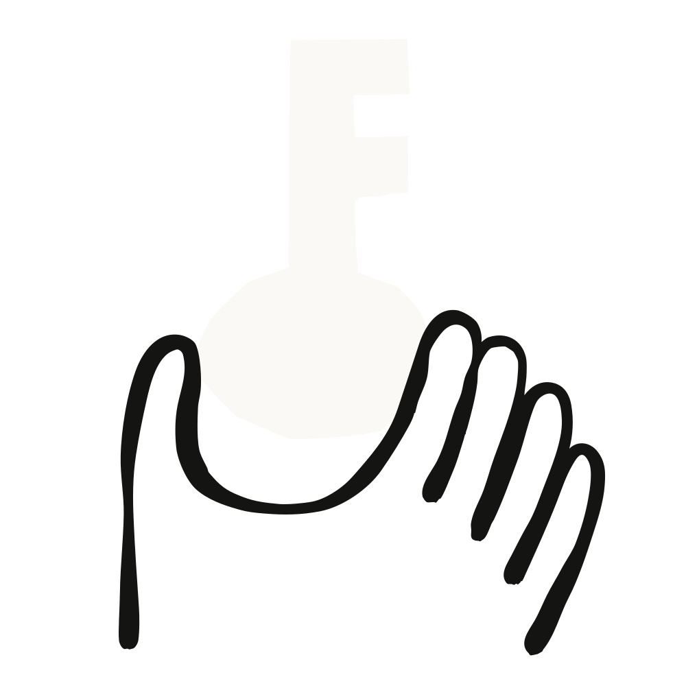
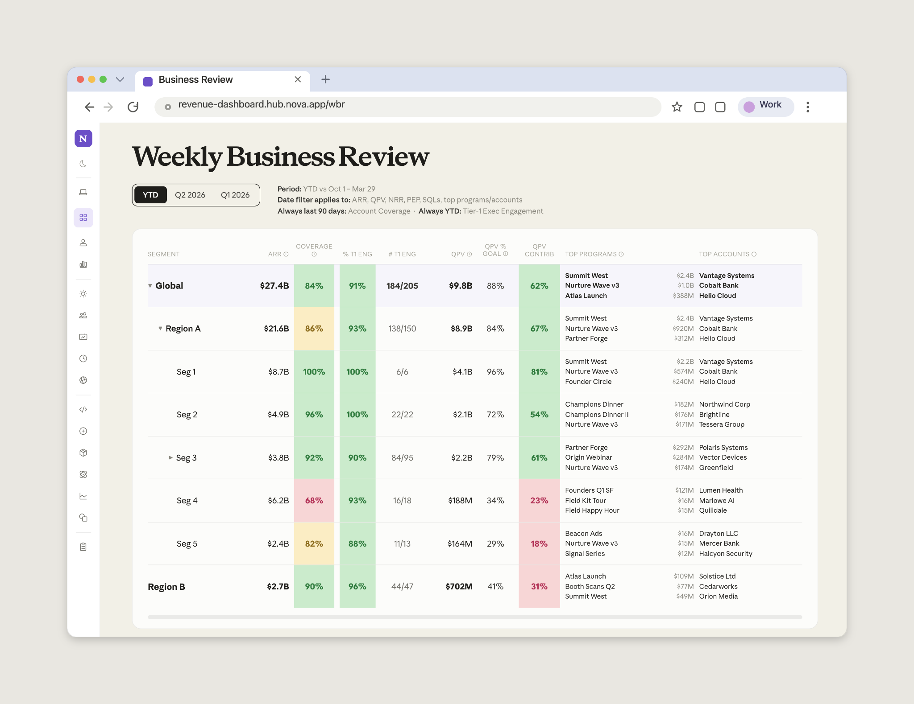
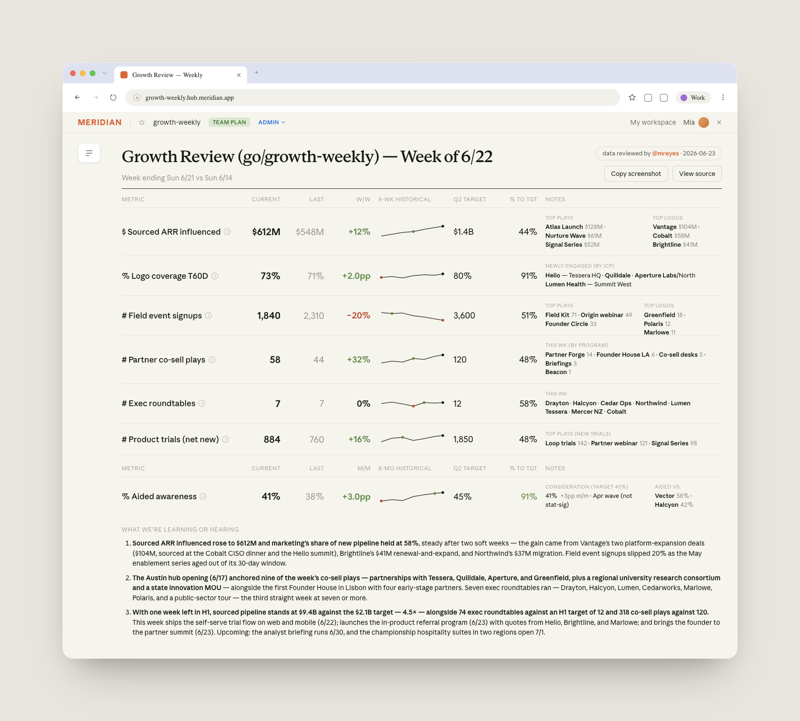
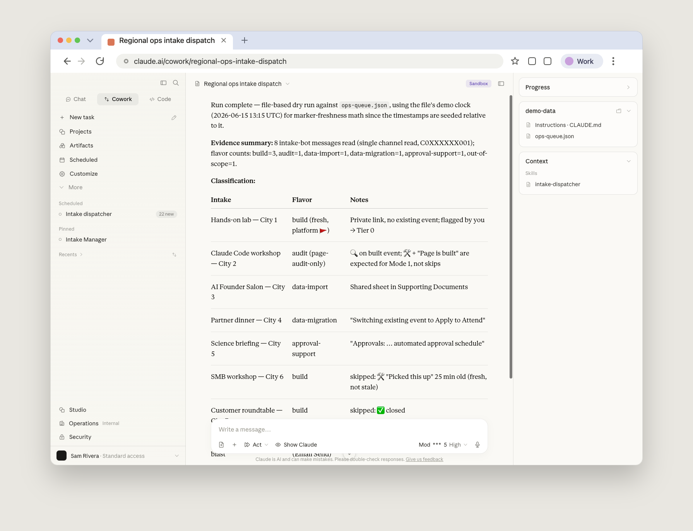
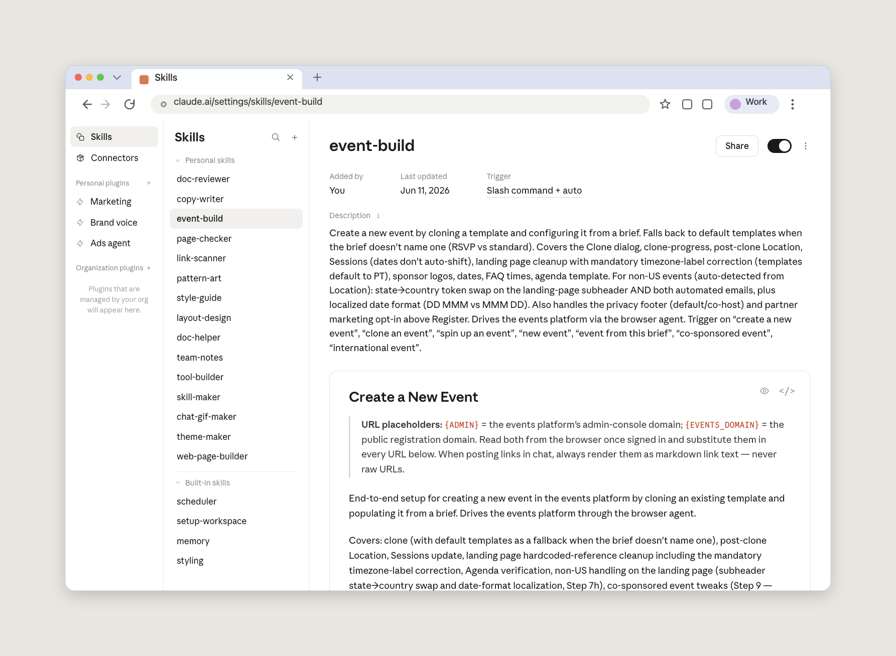

Anthropic 마케팅 운영(marketing operations)팀의 Ian Chan과 Annabel Custer가, 여러 플랫폼을 오가며 손으로 하던 업무를 팀 차원에서 어떻게 자동화했는지 들려줍니다.
마케팅 운영팀은 자기 시간의 상당 부분을, 마케팅 프로그램을 떠받치는 시스템들이 비즈니스의 속도에 발맞추도록 유지·관리하는 데 쓴다. 자동화는 분명 이들의 소관 안에 있지만, 정작 업무의 상당 부분은 전혀 자동화되어 있지 않다. 마테크(martech) 도구들은 서로 깔끔하게 연동되지 않고, 리포트는 수작업으로 취합되며, 랜딩 페이지는 하나씩 따로 만들어진다.
Anthropic 마케팅 운영팀의 Ian Chan은 예전에 매주 하루에서 이틀을 들여 주간 마케팅 지표 리뷰를 취합했다. 캠페인 운영을 담당하는 Annabel Custer는 새 이벤트를 하나 세팅할 때마다 Salesforce, HubSpot, Swoogo, 이메일 도구를 차례로 클릭해 가며 작업했다. 두 사람 모두 이제는 Claude Cowork에 워크플로를 구축해, 며칠씩 걸리던 수작업을 몇 시간으로 압축했다.
되찾은 시간은 이들의 업무 형태 자체를 바꿔 놓았다. Ian과 Annabel은 이제 시스템을 클릭해 가며 보내는 시간이 줄고, 이네이블먼트(enablement, 실무자 역량 강화)와 검증, 그리고 사내 더 많은 사람이 스스로 수치를 뽑고 자기 프로그램을 이끌게 되면서 마케팅팀이 의지하는 기반 데이터·프로세스에 더 많은 시간을 쓴다.
완벽한 세상이라면, Ian이 마케팅팀과 리더십을 위해 준비하는 주간 리포트의 모든 지표가 대시보드에 들어 있고, 그의 일은 그저 서사(narrative)를 엮는 것뿐일 것이다. 하지만 현실에서는 어떤 지표는 이미 대시보드에 있고, 어떤 지표는 아직 데이터 웨어하우스에서 대시보드로 넘어오지 못했으며, 또 어떤 지표는 아직 웨어하우스로 파이프까지도 연결되지 못했다. 새로 생긴 지표는 Slack 메시지나 통화 녹취록에만 존재하기도 한다.
Anthropic에서는 비즈니스가 전통적인 리포팅 파이프라인이 따라잡을 수 있는 것보다 빠르게 움직이고, Ian은 예전에 매주 하루에서 이틀을 데이터를 추적하고 검증하는 데 썼다. 이제는 그 데이터 사냥의 대부분을 Claude Cowork가 처리한다.
매주 일요일 저녁에 예약 작업(scheduled task)이 실행되어 Claude에게 지난주 리뷰와 최신 회의 녹취록을 읽고, 세일즈팀이 무엇에 집중하고 있는지 Slack에서 확인하고, 웨어하우스를 쿼리한 뒤, 수치와 몇 가지 제안된 집중 영역이 담긴 폴더를 남기도록 프롬프트한다.
월요일 아침, Ian은 Claude Cowork를 열어 지표 표와 제안된 헤드라인(또는 집중 영역)이 담긴 초기 리포트를 불러온다.

Ian은 이를 검토하고, 서사의 초점을 어디에 둘지 확정하거나 결정하고 나면, Claude에게 뒷받침하는 세부 내용과 예시로 이를 확장하라고 지시한다. 어떤 주에는 팀이 세일즈 우선순위에 대응하고, 또 어떤 주에는 제품 출시에 대응한다. 분기가 바뀌는 시점에는 Ian이 Claude에게 분기 계획을 앞세우라고 지시하고 분기 리뷰 문서를 넣어 준다.
Claude는 같은 데이터와 서사에서 리더십 슬라이드를 생성한다. 무엇이 바뀌었고, 왜 바뀌었으며, 각 팀이 그에 대해 무엇을 하고 있는지를 담는다. 후속 조치는 모두 Asana 태스크가 된다.

수치가 서로 맞지 않을 때, Claude는 추측하는 대신 불일치를 표시한다. 예를 들어 세일즈팀의 조직 개편 이후 마케팅의 리포팅이 더 이상 세일즈 쪽 리포팅과 맞지 않게 되자, Claude는 그 간극을 짚어내고 Ian에게 어떻게 처리하면 좋을지 물었다.
이 프로세스는 팀이 사용하는 마케팅 플랫폼·도구에 연결되는 커넥터, 그리고 Ian이 직접 만들어 계속 업데이트하는 세 가지 스킬(skill) 위에서 돌아간다.
매주 세션이 끝날 때마다 Ian은 Claude에게 스킬에 다시 반영해야 할 내용을 요약해 달라고 요청한다. 예를 들어 새로운 세일즈 조직 개편 구조, 그가 한 수정 사항, 또는 헤드라인을 새롭게 잡고 싶은 방식 같은 것들이다. Ian의 경우, 예전에는 최대 이틀치 작업이 걸리던 전체 과정이 이제는 최대 두 시간이면 끝난다.
이제 Ian의 시간 중 상당 부분은 마케터들이 질문을 다듬고, 프롬프트를 정교화하고, Claude에서 스스로 수치를 뽑았을 때 돌아오는 결과를 해석하도록 돕는 데로 옮겨 갔다. 또한 그는 데이터 레이어를 더 깊이 파고들 여력이 생겨, Claude가 수치·정의·지역 구조를 데이터 웨어하우스와 동일하게 해석하도록 챙기고 있다.
인간의 검증은 두 워크스트림 모두에서 없어서는 안 될 핵심이 되었다. 이는 Claude가 전통적으로 마케팅 분석가들의 시간을 많이 잡아먹던 지루한 수작업을 자동화하면서 더욱 빨라지고 있는 변화다.
마케팅 캠페인 뒤에 있는 인프라를 세팅하는 일은 전통적으로 마케팅에서 가장 손이 많이 가는 프로세스 중 하나였다. 모든 이벤트, 웨비나, 통합 캠페인은 CRM에, 이메일 시퀀스와 그 뒤의 자동화를 돌리는 마케팅 자동화 플랫폼에, 그리고 등록 페이지와 이벤트 랜딩 페이지를 호스팅하는 이벤트 관리 플랫폼에 각각 세팅되어야 한다. 이들은 대개 서로 다른 벤더이며, 그 사이의 연동은 완전한 경우가 드물다.
Claude Cowork 이전에는 Annabel이 전용 Slack 채널에서 모든 요청을 받아 그 시퀀스를 하나하나 수작업으로 처리했다. 그녀의 새 셋업은 거의 전적으로 Claude가 처리한다. 시작은 요청자가 필요한 도움의 유형(이벤트 구축, 데이터 임포트, 참가 신청(apply-to-attend), 승인 지원)을 지정하는 접수 폼(intake form)이다.
한 시간에 한 번씩 디스패처(dispatcher) 스킬이 채널을 읽고, 가장 급한 요청을 골라, 작업이 중복되지 않도록 티켓에 도장을 찍은 뒤, Annabel이 필요한 작업을 하도록 세팅해 둔 다섯 개의 전문(specialist) 스킬 중 하나에 넘긴다. 이 스킬 자체는 이벤트 세팅을 전혀 하지 않는다. 그 역할은 다음에 무엇을 돌릴지 결정하는 것이며, 이를 분리해 둔 덕분에 Annabel은 라우팅을 건드리지 않고도 각 전문 스킬을 개별적으로 다듬을 수 있다.

요청 유형 중 가장 복잡한 이벤트 구축의 경우, 이벤트 구축(event-build) 스킬이 전체 시퀀스를 처음부터 끝까지 처리한다. CRM 캠페인 생성, 워크플로와 리스트를 갖춘 마케팅 자동화 캠페인, 이벤트 플랫폼 세팅, 이메일 초안 작성, 랜딩 페이지 생성, 그리고 이들 사이의 모든 연동까지 맡는다.

구축이 끝나면, 감사(audit)를 위해 새 에이전트에게 넘긴다. 감사 에이전트는 사전 맥락 없이 시작해, 실제 라이브 랜딩 페이지에 테스트 등록을 제출하고, Gmail에서 확인 이메일을 열어 보고, 모든 것이 제대로 보이면 Asana 태스크를 완료로 표시한다. Annabel은 각 결과가 배포되기 전에 하나하나 검토한다.
이 워크플로는 Annabel이 다루는 마케팅 플랫폼·도구에 연결되는 커넥터, 그리고 그녀가 새로운 엣지 케이스를 발견할 때마다 만들어 업데이트하는 여러 스킬 위에서 돌아간다.
그녀는 또한 별도의 "매니저(manager)" 에이전트를 열어 둔다. 실행이 잘못되면, 매니저를 열어 무슨 일이 있었는지 살펴보고 무엇을 조정하면 좋을지 제안해 달라고 한다. 간직할 만한 것은 무엇이든 해당 스킬에 다시 반영된다.
이런 자동화된 워크플로가 Annabel의 하루에서 상당한 시간 절약이 되어 주긴 하지만, 그녀가 이를 구축한 가장 큰 동기는 업무의 품질이었다. 마케팅팀이 커지면서, 마케터들이 마침 가까이 있는 아무 템플릿에서 이벤트 페이지를 복제하다 보면 버그가 생길 수 있다. 확인 이메일에 잘못된 도시 이름이 뜨거나 랜딩 페이지가 깨지는 식이다. Claude Cowork로 그녀는 대규모로 이뤄지는 여러 구축 작업에서도 일관성을 얻는다.
Claude가 캠페인 운영의 반복적인 부분을 맡으면서, Annabel은 이네이블먼트, 그리고 더 나은 인사이트를 위한 프로세스·캠페인 아키텍처의 자동화나 최적화 같은 더 전략적인 프로젝트에 집중할 수 있다.